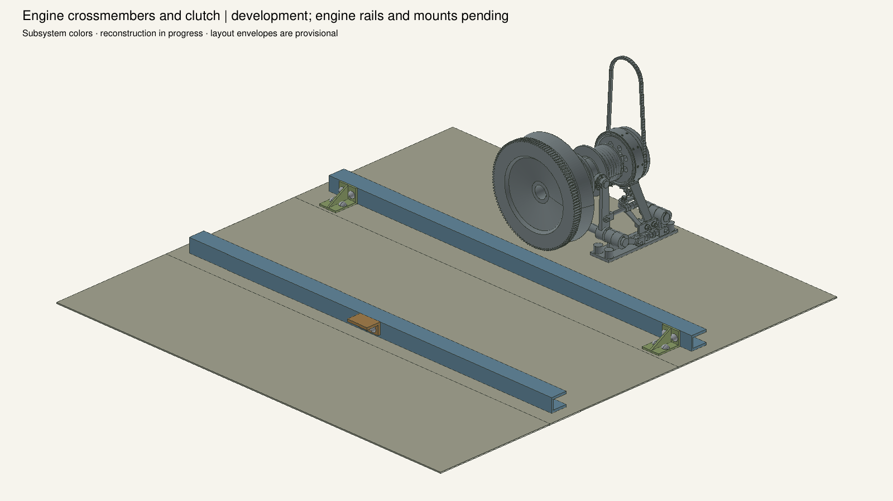
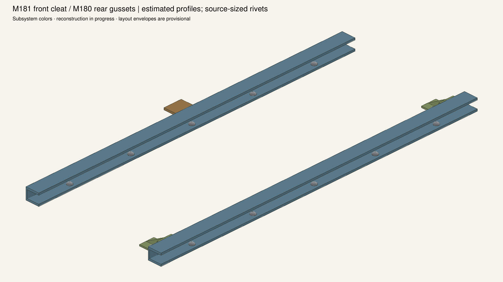
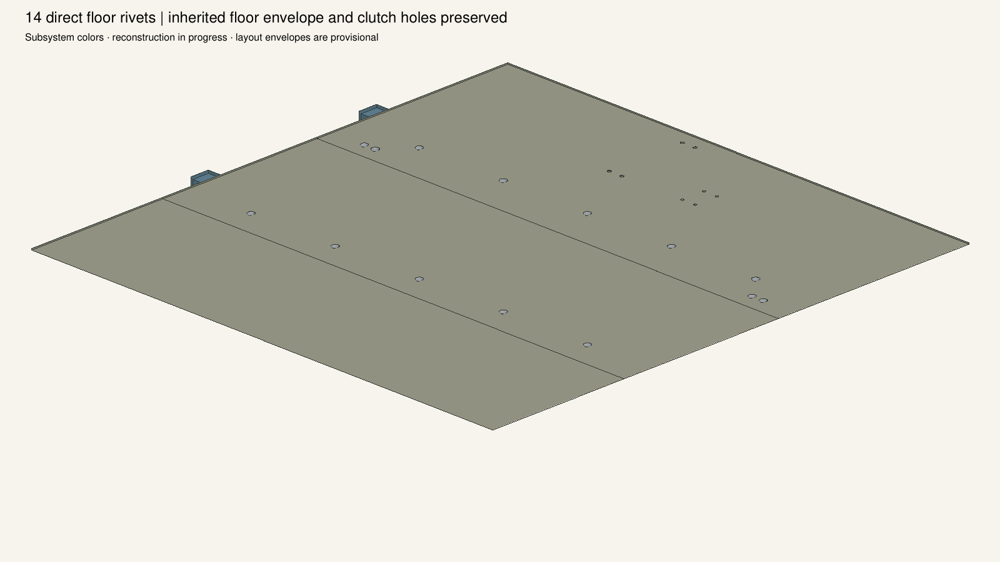
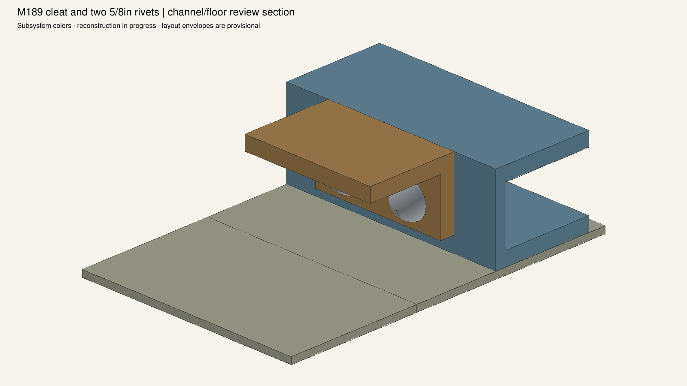
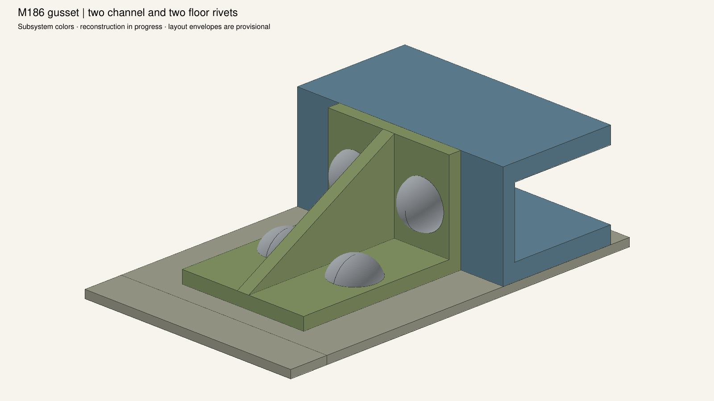
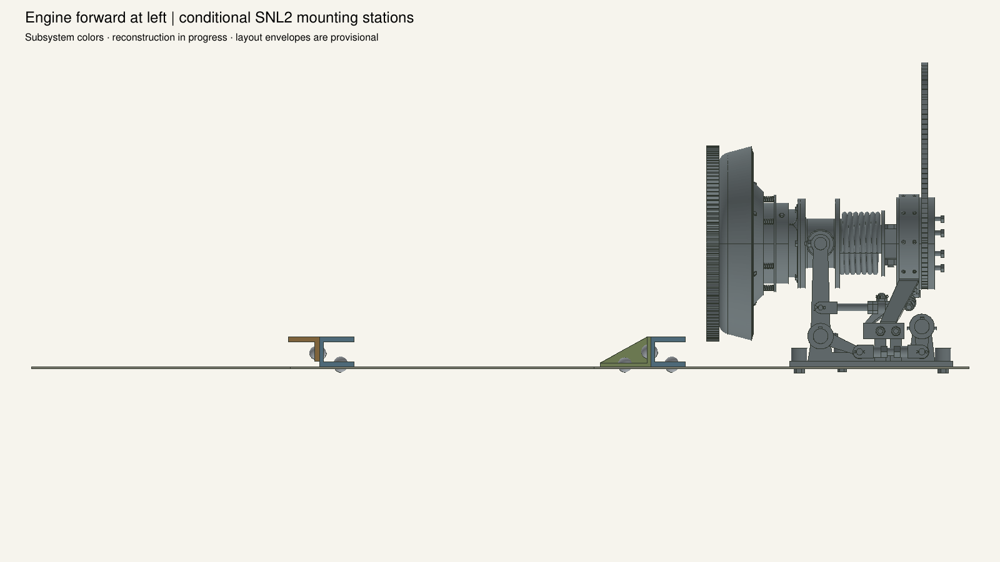
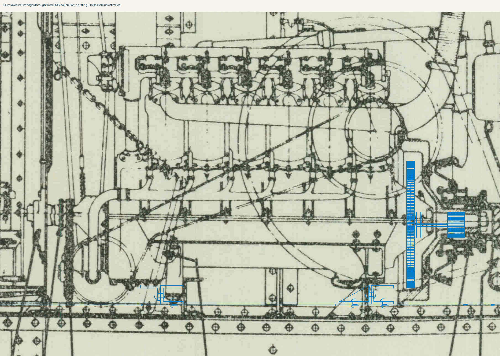

11 nested channel parts and14 direct floor rivets. Remaining suspension brackets, rails, packings, bevel washers, engine attachments and shared hull-angle joints are pending. Profiles and stations are estimated.







